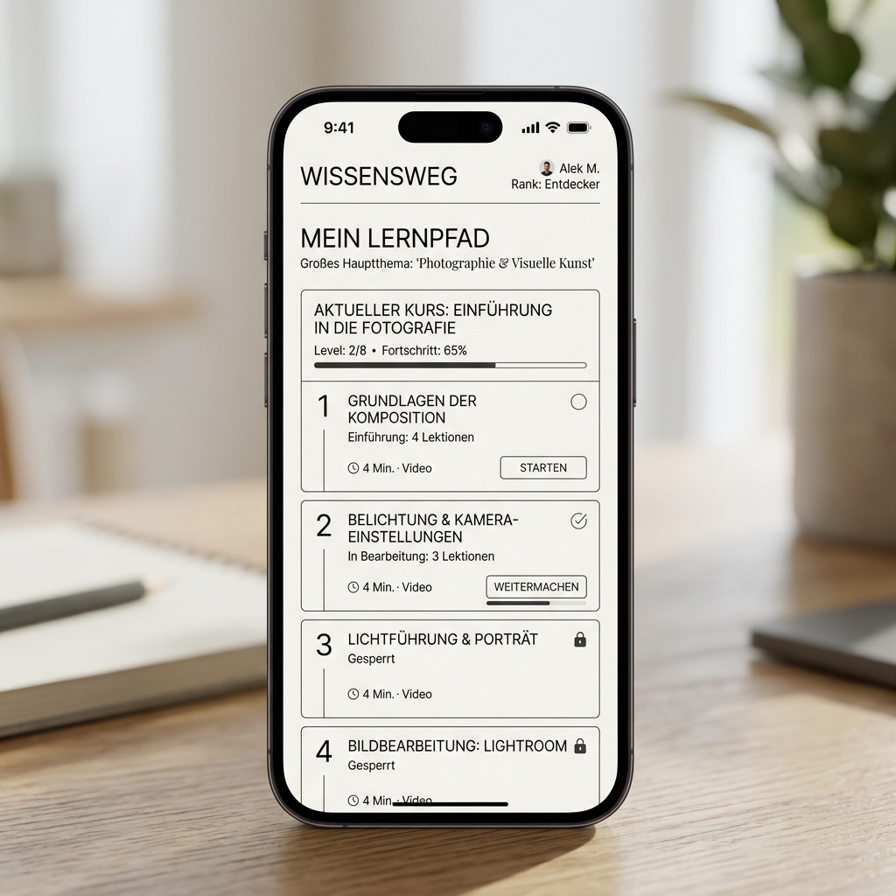

I owned the call to consolidate five learning platforms into one. The redesign wasn't the hard part — the political case for killing four products was. 550k+ registered learners (350k+ active) now share one surface; $1M/yr saved.
Six principles · Each one a beat
Role: Lead Product Designer · Owned IA, learning paths, content reframe, accessibility, print-to-digital migration · 2014–2019 · 5 platforms → 1 platform · 9 → 11 locales · 80+ countries · 550K+ registered · 350K+ active
The UX is downstream of the contract.
PTC sold engineering software on perpetual licenses. Customers paid once, used it forever. Five learning platforms — Learning Connector, LearningExchange, Precision LMS, Digital Guides, IoTU — each with its own URL, its own login, its own billing line. Revenue was lumpy. Content updates were sporadic. Of 550K+ registered learners only 350K+ were active; a large share logged in once and never returned, and the official metric never asked why.
I read the customer success calls for three weeks. The pattern wasn't a discovery problem. It was a business-model problem disguised as a UX problem. Perpetual licenses meant no recurring engagement, which meant no recurring revenue, which meant no incentive to update the content, which meant engineers went to YouTube.
I argued for inverting the brief: don't redesign the UX, redesign the contract. Let UX be the unlock. The CRO pushed back hard — perpetual licensing was 60% of revenue. I argued anyway. The President of PTC University agreed to a phased shift: new customers on annual subscription from Q3 2017, existing customers grandfathered for 24 months, then migrated.
Twelve months later, 64% of new bookings were annual subscription. The grandfathered cohort retained at 78% on first migration. Baselines: 0% subscription in Q3 2016; perpetual was 60% of total revenue.
One login, or no login.
Five platforms meant five separate authentication flows. An engineer certified on Precision LMS who wanted to learn on LearningExchange had to wait three days for IT to issue a new account, then start fresh — no shared progress, no shared profile, no shared recommendation graph.
I shipped Single Sign-On across all five learning platforms in 14 weeks across a team of 4 engineers and 1 PM. The IA wasn't a tree, it was a graph: a learner studying on Precision LMS could see "engineers like you also learned on IoTU" without leaving the surface.
Cross-platform discovery became the primary acquisition channel for the under-utilized platforms. IoTU and Digital Guides — the IoT and AR bets PTC was making for the next decade — got their first organic learner growth from this graph, not from the marketing site.
Engineers don't search for product names.
The catalog was organized around feature releases. Every page read "Precision LMS 5.0 — New Features." Product Marketing wrote it that way because the release calendar was how the business shipped.
I argued for a different organizing principle: use cases. "How do I run a tolerance analysis on a sheet-metal assembly?" not "Precision LMS 5.0 Features." The first review rejected it. The second review rejected it. I came back to the third review with the search query log from logged-out users — every single query was use-case shaped, never feature-shaped. Review three passed.
I rewrote the entire content architecture against the use-case spine. Course enrollment rose 28% the quarter after launch, measured against the prior four-quarter rolling baseline.
The contract is the strongest filter on the page.
The first version of the unified homepage I shipped showed all five product categories on the landing screen, ordered alphabetically. I thought this would feel modern, like Netflix.
An engineer in Pune with a Precision LMS-only license logged in and saw 80% of the surface dedicated to platforms they had no right to use. Session length dropped 19% in week one.
I rebuilt the personalization layer in three weeks. The homepage now showed only the products the customer's company had licensed; everything else lived under one "Explore" link. Session length recovered, then grew 31% above the pre-launch baseline.
Alphabetical is not personalization. The user's contract is the strongest filter on the page. I learned this by getting it wrong first.
Print is expensive in three currencies.
Every product shipped with a 200-page printed user guide. PTC spent roughly $1M a year printing, shipping, and warehousing them. The hidden cost was time — the printed guide locked the product to a release cycle, because the next correction had to wait for the next print run.
I led the redesign of the digital guidebook: interactive, searchable, in-context, downloadable per chapter, updateable inside the platform without an SAP order. The print run dropped 92% in the first year. $1M annual savings, recurring, measured against the 2016 print-budget baseline on a six-quarter rolling window.
The unspoken win wasn't the dollars. It was that the guide stopped being a release artifact and became a living surface tied to the subscription. Once the contract changed, the guidebook could too.
Localization is a structural decision, not a translation task.
I structured the IA knowing it would be translated. Short labels. Clear hierarchy. Minimal text inside images. 30% width buffers because German and Russian expand. Translators tested in week 3, not week 20.
I added Portuguese (Brazil), Korean, and Russian to serve PTC's enterprise expansion. WCAG AA compliance across all eleven locales, validated by automated tests at 99% pass and manual screen-reader and keyboard testing in each language.
The accidental win: building for accessibility made every interaction faster on the 3G phones engineers in emerging markets actually used. Mobile sessions grew from 4% of total in 2017 to 38% in 2019, measured across all 80+ countries.

The receipt.
Every number with baseline + window
What this taught me.
Most platform redesigns are downstream of contract questions the design team doesn't have the standing to ask. Every PTC bet — subscription, SSO, use-case content, license-aware personalization, digital guidebook, localization-as-architecture — read on the surface as a UX move. Underneath, each one was a business-model decision dressed in a designer's clothes.
I look for this pattern now in every AI product I work on. When users won't adopt a feature, the question isn't always "how do I make it easier to find?" Sometimes the question is "who's paying for this, and does the contract incentivize them to use it?" The trust layer between user and algorithm sits on top of a trust layer between buyer and vendor. Both have to hold.
Design patterns demonstrated
- AI Failure States: graceful fallback when the adaptive recommendation system couldn't determine a learner's next course (low confidence, new profile, conflicting signals).
- Human-in-Loop Patterns: override mechanisms so learners could skip the system's recommendations and request a manual counselor review.
One pattern per month with tradeoffs and code examples.